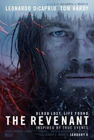

Merhaba, Ben Mert Erşişko 30 yaşındayım ve Bursa'da yaşıyorum kodluyoruz.org aracılığı ile yazılım öğreniyorum. Çok keyifli, heyecanlı ve öğretici bir sürecin içindeyim. Hobilerim arasında kahve hazırlamak var, keyif aldığım şeylerin başında geliyor.
Öğrenme sürecinde bana destek olan herkese çok teşekkür ederim.
Teşekkürler, Kodluyoruz.org
The Revenant
Diriliş, Alejandro G. Iñárritu'nun yönettiği, 2016 yılında gösterime giren biyografik western gerilim filmi. Senaryo Michael Punke'nin 2002'de yayınlanan aynı adlı romanından uyarlanarak Iñárritu ve Mark L. Smith tarafından yazıldı. Filmde sınır sakini Hugh Glass'ın hayatından esinlenildi.